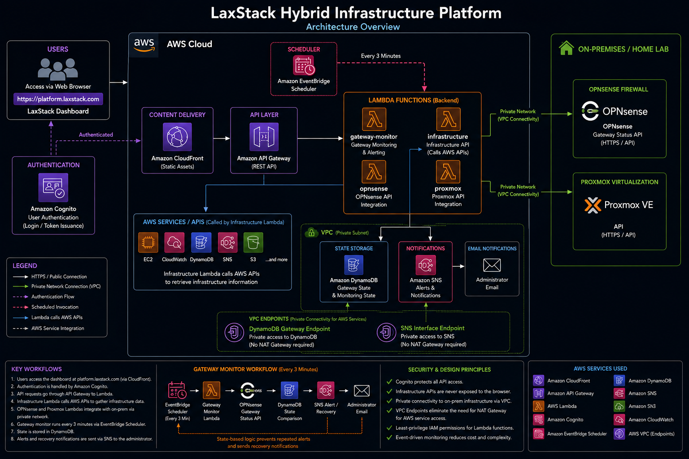
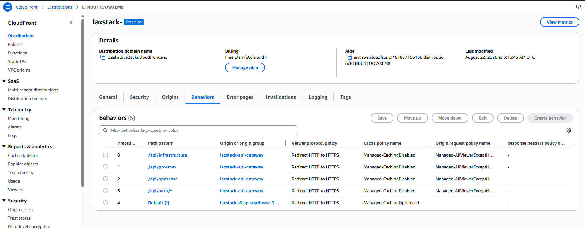
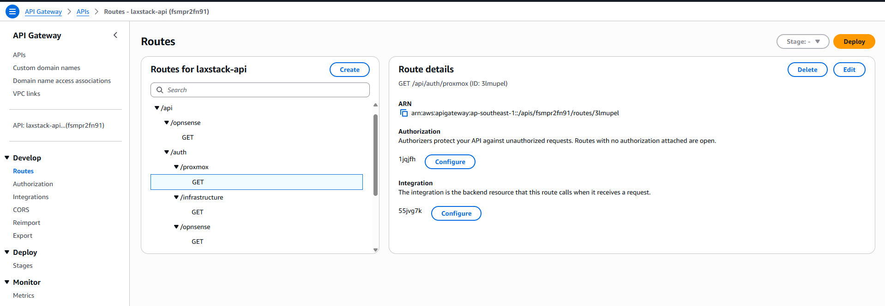
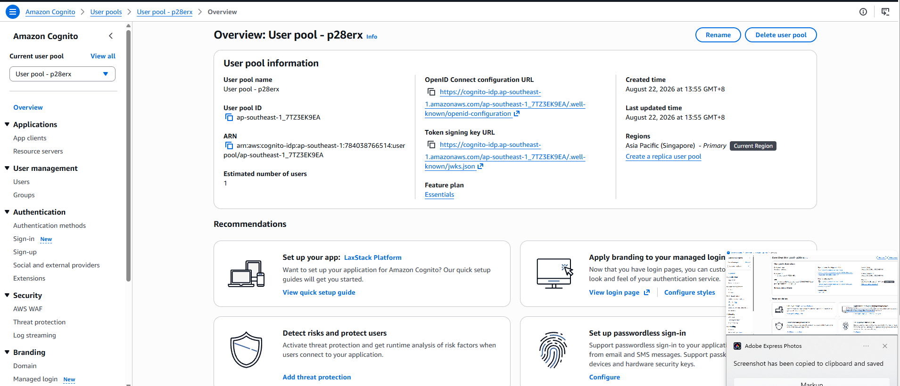
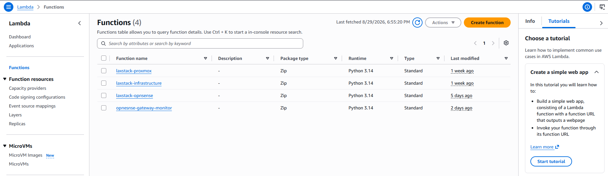
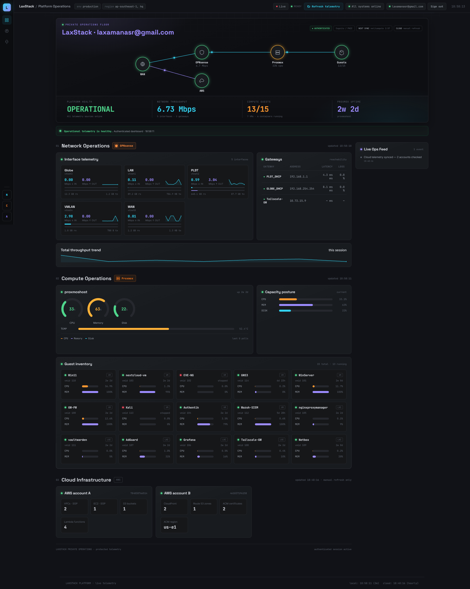
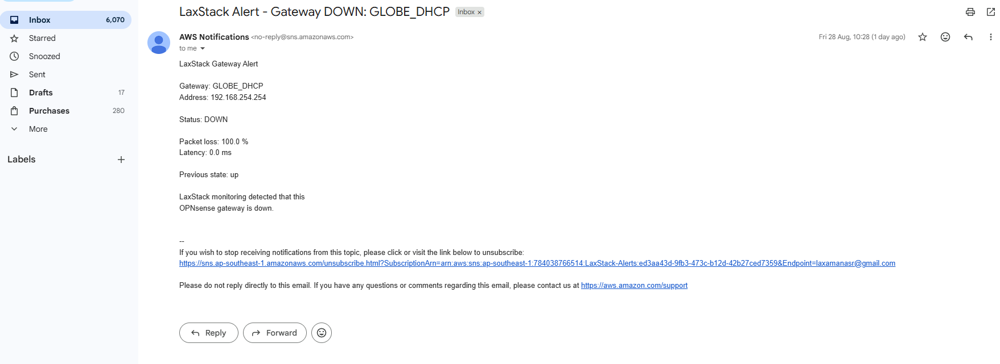
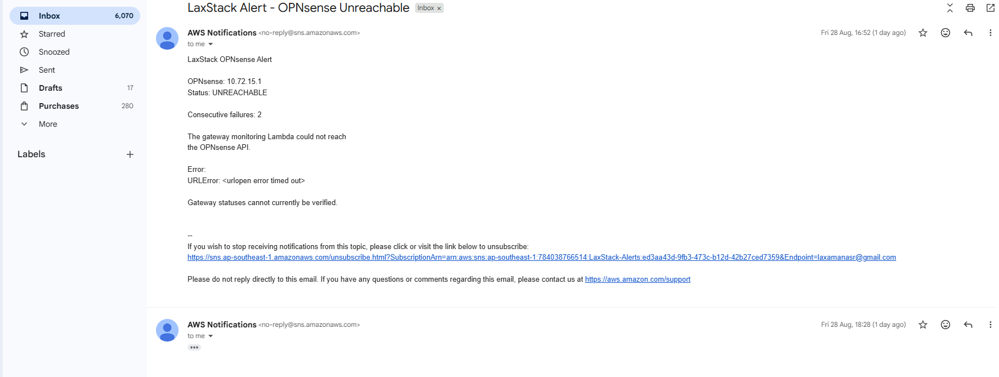

A live dashboard for the OPNsense firewall, Proxmox hypervisor, and AWS accounts I run day to day — with a public telemetry snapshot for anyone who visits, and a fully authenticated operations view behind Amazon Cognito for me. Serverless end to end: API Gateway, Lambda, DynamoDB, SNS, and an EventBridge-driven alerting pipeline that watches gateway health independently of the dashboard itself.
My homelab already runs real infrastructure — an OPNsense firewall handling multiple WAN uplinks and gateways, a Proxmox cluster hosting a mix of VMs and containers, and two AWS accounts for cloud-connected experiments. Checking on all three meant three different logins and three different mental models. There was no single place to just look and know the state of things.
The engineering goal wasn't just a status page — it was to design something with real access boundaries: a version that's genuinely useful to a visitor with zero credentials, and a meaningfully deeper version that only unlocks after proving who I am. That split shaped almost every other decision in the project, from how the backend is authorized down to what the frontend is allowed to poll.
It was also a deliberate excuse to build a complete, production-shaped serverless product — OAuth2/PKCE, a JWT-authorized API layer, and independent backend alerting — rather than another isolated lab exercise.
OPNsense, Proxmox, and two AWS accounts, unified into a single dashboard instead of three separate logins.
Not a toggle — a genuinely different product depending on whether you're signed in, enforced at the API layer, not just the UI.
OAuth2/PKCE, a JWT-authorized API, and autonomous backend alerting — the same shape as a real product, not a lab toy.
Four decisions shaped the backend before a single line of frontend code was written.

The console side, behind the diagram:


/auth; every protected route sits behind a JWT authorizer validating Cognito-issued tokens.

The difference isn't cosmetic — it's enforced by what the API layer will actually authorize.
/api/* routes
A dashboard only helps if someone's looking at it. This part doesn't need anyone to be.
Separate from the interactive dashboard, a dedicated Lambda checks OPNsense gateway health on its own schedule — independent of whether the site has a single visitor or none. State is written to DynamoDB specifically so the function can tell the difference between "still down" and "just went down," which is what keeps it from paging me every three minutes for the same outage.
DynamoDB remembers the last known status per gateway, so a genuine outage sends exactly one alert — not one every polling cycle.
The same comparison that triggers an outage alert also triggers a recovery email the moment a gateway comes back.
A second failure mode entirely: the monitor Lambda itself can't reach the OPNsense API. That's tracked as consecutive failures, not a single blip, before it ever emails me.
Both alert types firing for real, not staged for this write-up:

GLOBE_DHCP flipped from up to down — packet loss, latency, and the previous state all included.
URLError included — and that it waited for 2 consecutive failures, not one, before alerting.Documented because the fastest-looking fix was the wrong one twice in a row.
Every real sign-in attempt landed on Cognito's own /error?error=invalid_request page — even though AWS's own "View login page" button in the console worked perfectly. Same user pool, same app client, wildly different outcomes.
Rather than guess, I built a battery of curl tests hitting /oauth2/authorize and /login directly — adding scope, then state, then the PKCE code_challenge one at a time — to find the exact parameter that flipped a working request into a rejected one.
Every single isolated test came back clean — the app client config, the PKCE shape, and the Managed Login branding were all correct by AWS's own documented rules. A theory about a stale browser cookie from an earlier broken branding style also tested out and got ruled out in an incognito window. The request that failed in the browser kept succeeding by hand.
The only way forward was to stop guessing and capture the browser's actual outgoing request via a HAR export. It revealed a client ID one character off from the real one — a zero where the real app client used the letter o — hardcoded into the frontend and invisible at a glance in a 26-character string.
One character corrected in the frontend's Cognito config, and the full PKCE flow completed end to end on the very next attempt.
Framed as maturity phases rather than a flat feature backlog.
Dual-tier dashboard live, Cognito PKCE auth working end to end, autonomous gateway alerting via EventBridge and SNS.
Move Lambda, API Gateway, and Cognito configuration into Terraform instead of manual console setup.
Trend data currently lives only in the browser for the session — move it into DynamoDB or CloudWatch for real history.
Extend gateway alerting beyond email into chat, where I'm actually more likely to see it in real time.
Extend the same Cognito-protected pattern to additional on-prem systems as the homelab grows.
{kind=link}
{kind=link}
{kind=link}
{kind=link}
{kind=link}
{kind=link}
{kind=link}
{kind=link}